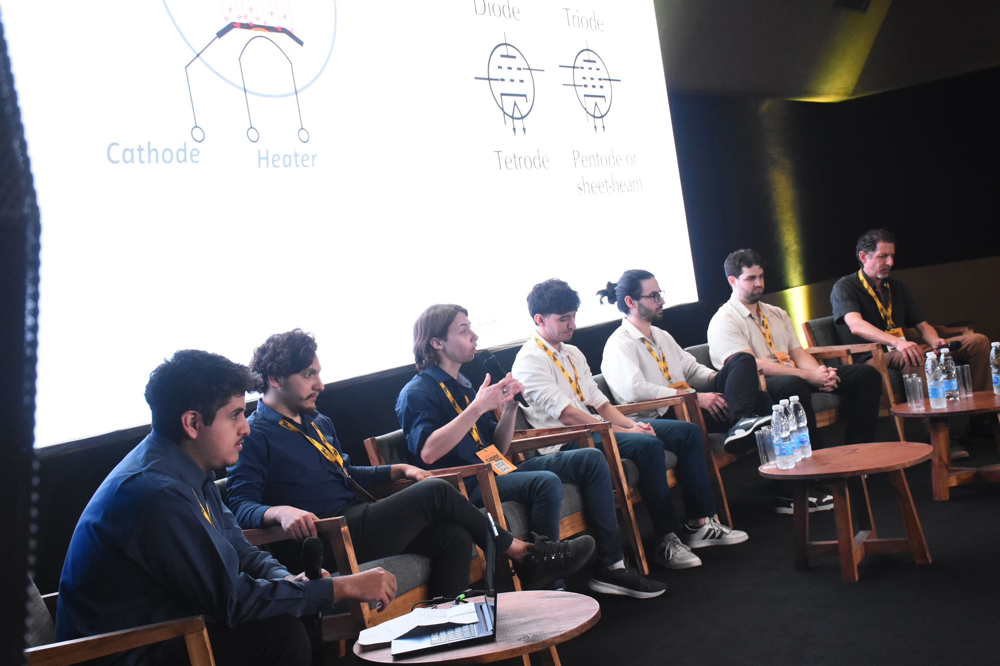
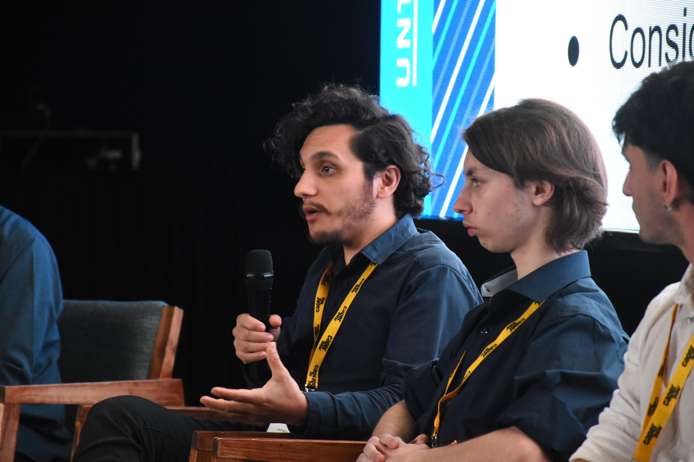
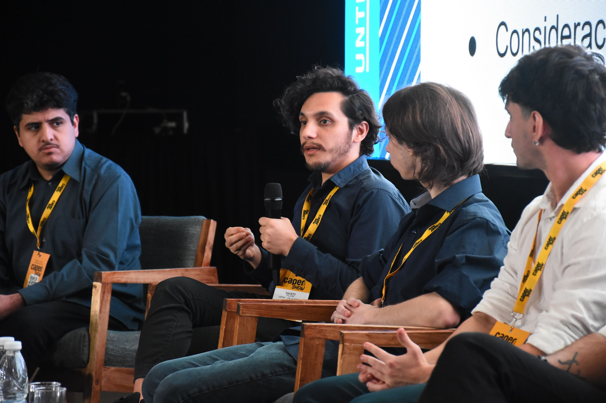
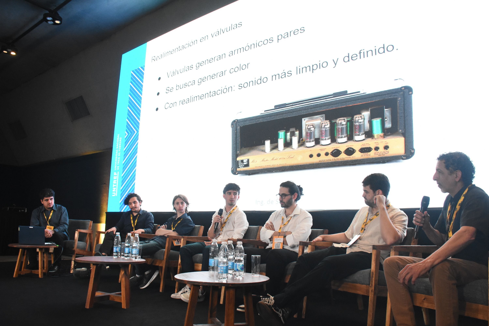
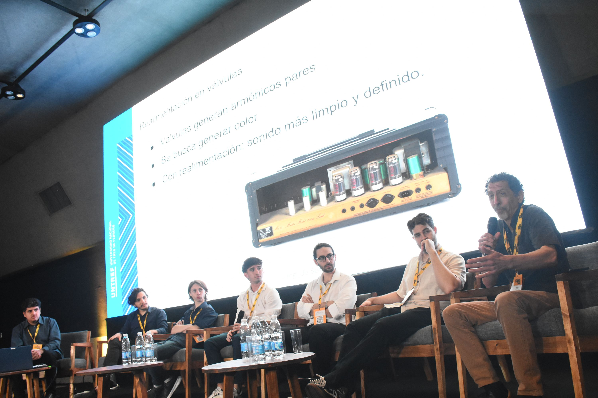

Disertación en CAPER Show 2025
Se exponen las características de las válvulas de vacío y su evolución tecnológica. Se analiza la naturaleza de los armónicos generados por la distorsión valvular y la implementación de estos dispositivos como generadores de armónicos o compresores de audio en el flujo de trabajo profesional.




